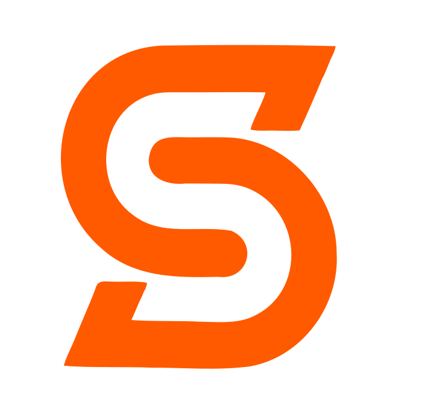

Orange на білому
Векторна марка «S» (векторизована з референсу, суцільний Signal Orange) + вордмарк і локапи. Варіанти на світлому, темному та моно. Основний локап - горизонтальний; марка - для фавікона й малих розмірів.

